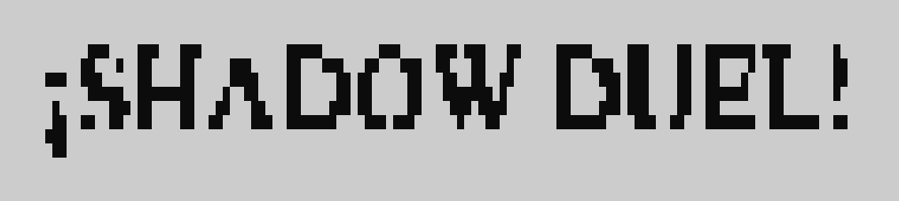
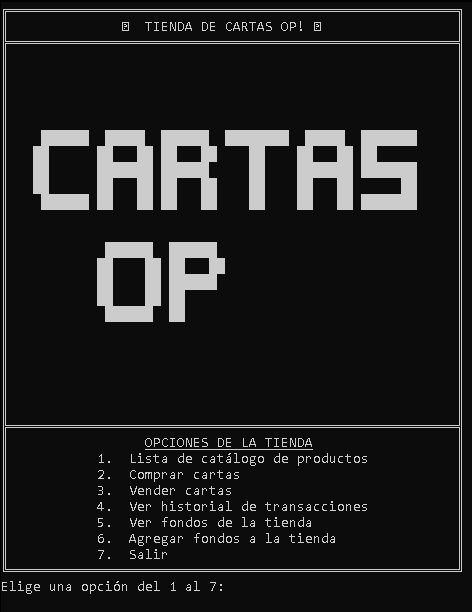
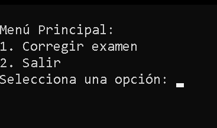
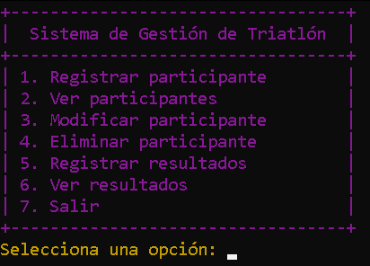
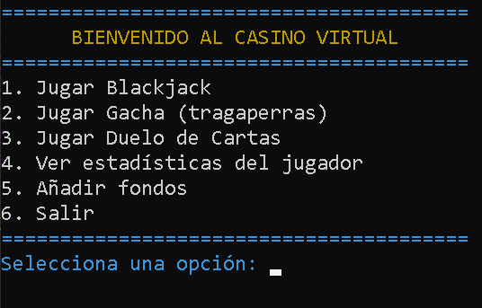
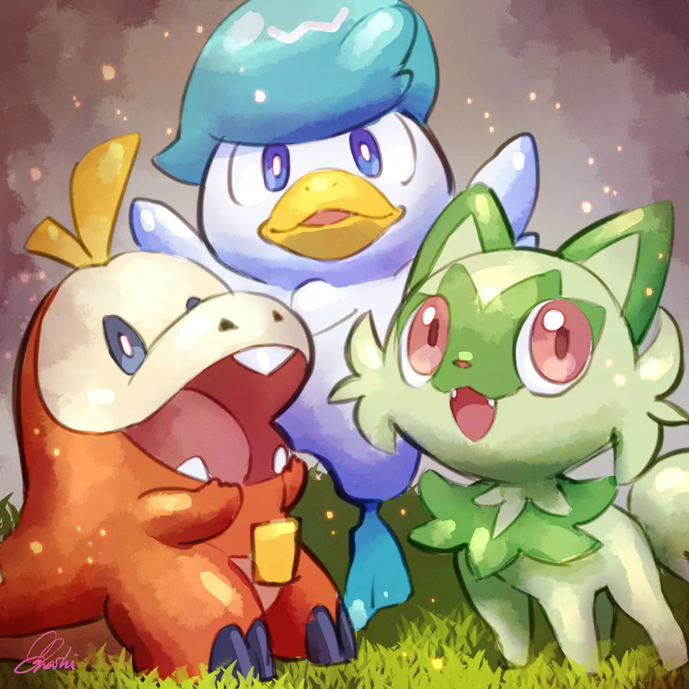
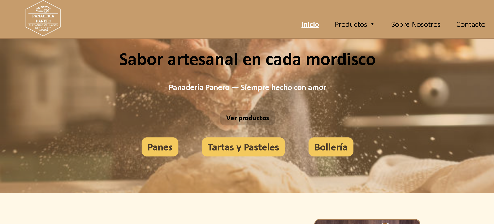
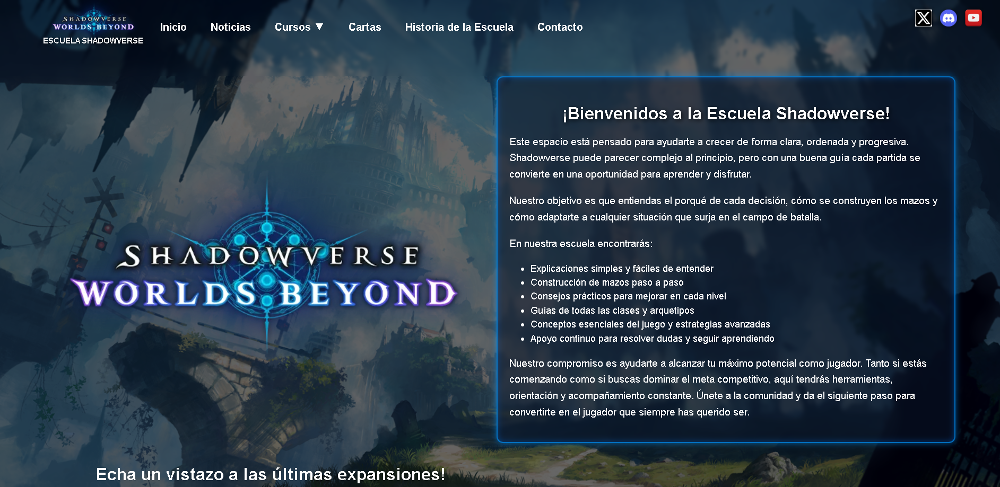

Mis Proyectos

Shadow Duel!
Primer proyecto en el que simulo un pequeño juego de cartas contra la máquina.
Ver Proyecto
Tienda de cartas Yu-Gi-Oh! (Cartas OP)
Simulación de una tienda de cartas basada en la temática Yu-Gi-Oh!
Ver Proyecto
Corrector de exámenes
Programa para corregir exámenes a partir de los datos introducidos.
Ver Proyecto
Gestión de Triatlón
Gestión de participantes, resultados y modificaciones de un triatlón.
Ver Proyecto
Proyecto Casino
Simulación de varios juegos de casino como blackjack y tragaperras.
Ver Proyecto
Gestión de Guardería Pokémon
Gestión de clientes, Pokémon y empleados en una guardería Pokémon.
Ver Proyecto
Pagina Web Panadería
Primer proyecto completo, cuyo tema principal era una panadería. Aún con un tono jocoso y cómico, se busca parecer lo más posible a una página web real de un negocio cualquiera.
Ver Proyecto
Pagina Web Shadowverse
Página web centrada en el juego de cartas online Shadowverse Worlds Beyond, adaptado al tema de hacer una escuela para el juego. También contiene una galería de cartas interactiva de las cartas más recientes que había hasta el momento.
Ver Proyecto